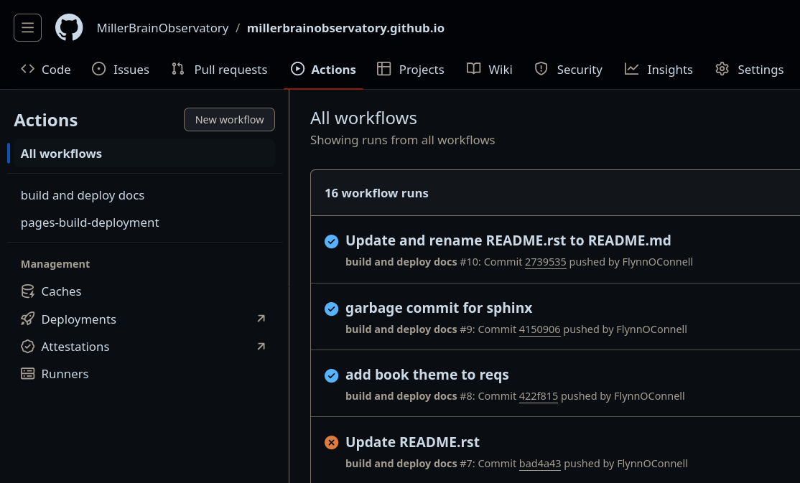
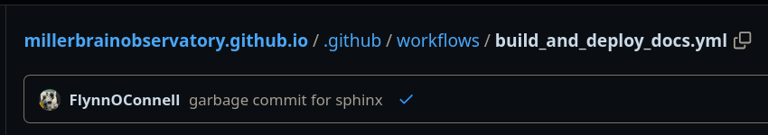

Building Documentation#
Documentation for this compute hub and the various pipelines are build using the following tools:
python
pip
conda
sphinx
github actions
Thats it! The first three should be familiar, python with its two most popular package managers (we use conda for everything that we can, and fallback to pip).
It is my strong opinion that simpler the better when it comes to documentation tools. At the end of the day, it’s just raw html, and should be accessible from any browser environment on any device.
The workflow to update documentation is pretty simple.
Note
This assumes you have a working version of python3, conda/miniconda/anaconda, and pip. Clone the repository:
git clone +git@github.com:millerbrainobservatory/<REPOSITORY>.git
cd docs
make clean && make html
Important
You need to activate the conda environment before calling make clean or make html.
The github action triggers for each .yml file within root/.github/workflows/. We have build_and_deploy_docs.yml, or some similar variation.
This file is organized into groups -jobs that do all of the work for us on github servers.
The first two lines:
name: build and deploy docs
on: [push, pull_request, workflow_dispatch]
name is going to appear on github.com in the actions tab, which shows us graphically the code executed from this workflow.` on controls when the workflow is run.
These are the most common values to change. For a high level overview on the rest of the worflow: - clone our github code, - setup dependencies, - use Make to build the docs - push the html to a separate gh-pages branch - trigger gh-pages to deploy our site to its servers with a build-in github workflow
Troubleshooting#
Docs look good locally, 404 on site when docs look good locally but bad online, there is an issue with the github workflow. On github.com/repository go to the Actions tab. The most recent deployment should be shown with a red X. Click on this X to see the error logs. This is generally an issue with docs/requirements.txt. This document holds the dependencies to build documentation, and since our project builds locally and not online, this is the usual suspect. The output of the github actions will tell you:
 {kind=link}
{kind=link}

Directory Structure#
Various self-documenting repositories have wildly variable structures to how their documentation is organized. We keep it simple and follow numpy and their documentation conventions. Youll see tutorials on sphinx-quickstart as how to “get started” with sphinx. That is how these docs started.
/docs/_static: This is where images, videos, media will go. Along with CSS and logos/icons /docs/_static/_images: This is where images go /docs/_static/_videos: This is where videos go docs/_templates: dont touch this, it makes our website pretty and organized
make html produces: docs/_build/html: this is the golden nugget docs/_build/doctree: you dont need this until you want to preview exactly what objects are created for debugging